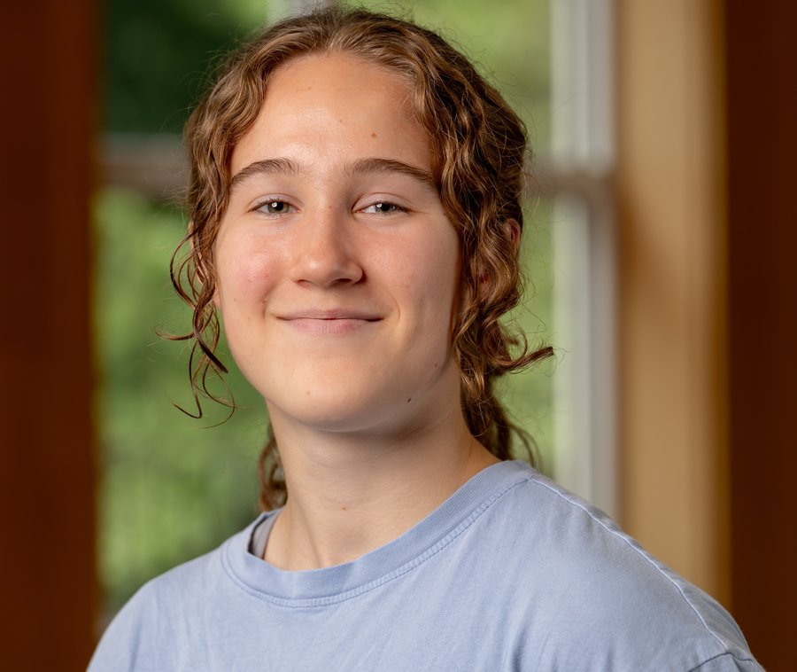
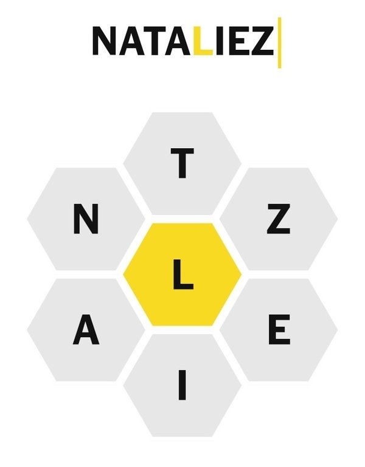

Baltimore Polytechnic Institute
The Ingenuity Project
About
I am a high school senior in the Ingenuity Project at Baltimore Polytechnic Institute, interested in environmental science, chemistry, and technology.
I have pursued my interest in STEM throughout my time at high school by taking classes such as AP Computer Science Principles, AP Physics 1, AP Calculus AB and BC, and AP Chemistry. This year I am taking Differential Equations and Applications at Johns Hopkins University as part of the Future Scholars program, along with AP Biology, AP Statistics and AP English Literature.
Research
In my junior year, I worked with Prof. Beth O'Shea (University of San Diego) and Prof. Maya Gomes (Johns Hopkins University) to investigate whether sediment dredged from Baltimore Harbor and the Chesapeake Bay could be reused for beneficial or innovative purposes. Maryland dredges around 4.5 million cubic yards of sediment from its waterways every year, but there are limited options for storage and use, both because of capacity and contamination. With data collection and processing assistance from my mentors, I analyzed the total concentrations of 4 heavy metals (chromium, copper, manganese, and lead), found correlations with organic matter in the sediment, and compared metal concentrations to guidelines to draw conclusions about available reuse options. Results of elutriate tests revealed that the metals are not easily mobilized, and total concentrations indicated some possibility for industrial reuse. More details can be found on the Sediment research page.
In my summer 2026 internship with Prof. Susu Xu’s lab (Johns Hopkins University) as part of the Whiting Internships in Science and Engineering (WISE) program, I explored the methods that researchers use to model wildfire propagation. I also researched the unique difficulties that come with wildfire modeling and prediction in what is known as the wildland-urban interface (WUI), where human settlements border or mix with wildland vegetation. I created a wildfire simulation using the level-set method and incorporated AI agents to study how humans might respond. My own contribution was to develop an algorithm for converting Google Earth imagery into a map of landscape physical properties, which is an array of numerical values that affect how fires spread in the simulation. A more complete project description is on the Wildfire simulation page.
Other interests
I have played competitive soccer for 11 years. I am currently co-captain of the Baltimore Polytechnic Institute Varsity Girls Soccer team, and I play for Baltimore Celtic Soccer Club.
Statement about AI use
The content on this website is human written. The layout and design of the website were AI-assisted. All final research products, including papers and presentations, were created without the use of AI. A further statement about AI use in the wildfire simulation project can be found on that page.
